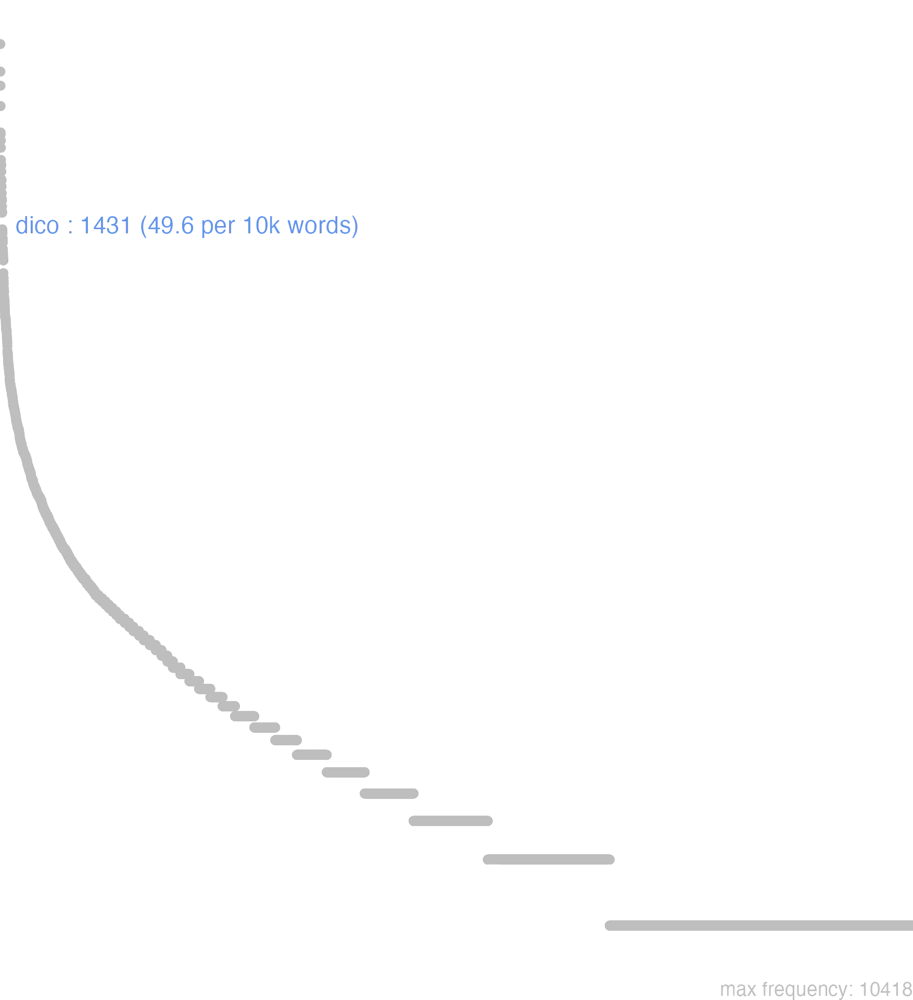

41 dico
41.0.0.1 bases lexicais
id: http://lila-erc.eu/data/id/lemma/99302
classe: verbo
paradigma: 3ª conjugação (sem vogal temática)
outras grafias: deico
variantes do lema:
deico, dico presente | indicativo | 1ª pessoa singular | voz ativa
deicere, dicere presente | infinitivo | ativo
deicet, dicet futuro | indicativo | 3ª pessoa singular | voz ativa
deixi, dixi, deixsi pretérito perfeito | indicativo | 1ª pessoa singular | voz ativa
dictum particípio passado | nominativo neutro singular
dicturum particípio futuro | nominativo neutro singular
dīc
dīcō
dīcis
dīcĕre
dixī
41.0.0.2 dicionários tradicionais
dīcō -is -ĕre dīxī, dīctum
v. tr.
Obs.: Constrói-se com acus.; com acus. e inf.; com dat. Na passiva impess. constrói-se com nom. e inf. Formas arcaicas: imper. dice Plaut. Capt. 359; subj. dixis Plaut. Aul. 744; info dicier Plaut. Cist. 83.
1 I-Sent. próprio Dizer com um caráter solene e técnico, pois que se trata de um vocábulo da língua religiosa e jurídica, afirmar, expor,pronunciar, falar em tom solene e ameaçador Cíc. Fin. 2, 85; Cíc. De Or. 3, 213; Cíc. Fam. 3, 8, 5; Cíc. Dom. 70.
2 II-Outros sentidos Criar, eleger, nomear:
3 II-Outros sentidos Chamar, denominar, designar Cíc Ac. 1, 17.
4 II-Outros sentidos Cantar, celebrar Hor. O. 1, 21, 1.
5 II-Outros sentidos Fixar, determinar, regular Cés. B. Gal. 1, 41, 4; Cés. B. Gal. 1, 42, 3.
6 II-Outros sentidos Advertir, notificar, avisar Cíc. Arch. 8.
7 II-Outros sentidos Por enfraquecimento de sentido: falar, dizer Cíc. Or. 153; Cíc. Cael. 28.
[EXEMPLOS]
2
consules dicere T. Lív. 26, 22, 9 nomear os cônsules.
dīc
imperativo de dīco 2.
dixe
= dixīsse, forma sincopada do inf. perf. de dīco.
dīxī
perf. de dīco.
dixis dixti
= dixeris, dixisti.
Dĭco -ĭs -xī -ctŭm -cĕrĕ
v. trans.
1 dizer;
2 affirmar;
3 dizer, exprimir, recitar;
3 fallar em publico;
3 manejar a palavra;
4 descrever, expôr, contar, referir, compôr, annunciar, predizer;
5 pronunciar;
6 chamar, appellidar;
7 nomear, eleger, elevar a uma dignidade;
8 assignar, determinar, fixar, regular;
9 advertir, avisar ameaçando, dar a saber, notificar;
10 entender, querer dizer, ter intenção de;
11 alistar-se, assentar praça.
[EXEMPLOS]
1
dicere mendacium Plaut Mentir
dicere sacramentum Hor Dar um juramento
dices Cic dir-me-hás
dicet aliquis Cic. Sall Dirá alguém, dir-me-hão, objectar-me-hão
dicito aduenisse Plaut Vae dizer que elle chegou
dicitur uenturus Plaut Diz-se que ele pediu
dictum est habitasse… Ter Disse-se que elle habitára…
ille quem dixi Cic Aquelle de quem fallei
mirum dictu Plin Coisa admirável, espantosa
ut ita dicam Petr Sen
ut sic dicam Cic Por assim dizer, digamo-lo assim
2
dicebant, ego negabam Cic Elles afirmavam, eu negava
eumdem esse dicis Cic Dizes, affirmas que é o mesmo
3
causam haud dico Ter Não tenho coisa alguma a dizer, a responder
causam nullam dico Plaut Não tenho coisa alguma a dizer, a responder
dicere Plin. J Apresentar, expôr a sua opinião
dicere Cic Advogar uma causa
dicere ad populum Cic Discursar diante do povo
dicere apud centumuiros Cic Pleitear perante os centumviros
dicere causam Cic Advogar uma causa
dicere causas Cic Exercer a advocacia
dicere ius Cic Administrar a justiça
dicere orationem Cic Lêr um discurso
dicere proœmium Quint Recitar um exórdio
dicere sententiam Cic Apresentar, expôr a sua opinião
non idem loqui quod dicere Cic Não é o mesmo fallar e manejar a palavra
uelere dicendo Cic Sêr eloquente
4
dicere fata Hor Annunciar o futuro
dicere laudes Phœbi Hor Celebrar os louvores de Apollo
dicere Pelidæ stomachum Hor Cantar a ira de Achilles
dicere siluestrium naturas Plin Descrever os animaes bravios
neque silendus, neque dicendus sine cura Vell O que Mithridates não deve sêr passado em silêncio, nem de quem se há de falar de leve
5
dicere litteram Cic. Quint Pronunciar uma lettra
6
ames dici pater Hor Deves gostar que te deem o nome de pae
latine dicimus elocutionem quam… Quint Chamamos em latim elocução o que…
7
dicere ædilem Liv Nomear um edil
dicere arbitrum bibendi Hor Eleger para rei do banquete
dicere deum Palæmona Ov Elevar Palemão á dignidade de deus
dicere dictatorem Liv Nomear um ditador
8
dicere diem nuptiis Ter Marcar o dia para o casamento
dicere leges pacis Liv Fixar as condições de paz
dicere leges uictis Liv Impôr leis aos vencidos
dicere pecuniam doti Cic Estabelecer em dote uma quantia de dinheiro
dicere pretium muneri Hor Dar valor a um presente
ut dictum erat Sall Segundo tinha sido convencionado
9
dicebam tibi ne… Plaut Eu avisava-te que não…
est fuga dicta mihi Ov Foi-me ordenado que me exilasse
illam eiiciam; dixi, Phormio Ter Eu hei de expulsal-a; ouviste, Phormião?
misit qui diceret ne discederet Nep Mandou-lhe dizer por uma pessôa que não se ausentasse
tibi dico Ter. Phaed Olha, eu aviso-te
tibi diximus Ov Olha, eu aviso-te
10
mortem dico et deos Cic Quero dizer, a morte e os deuses
platonem uidelicet dicis Cic Platão é de quem tu queres fallar
uxoris dico, non tuam Plaut Fallo da morte de tua mulher, e não da tua
11
dicere sacramento Liv. Plin. J Prestar juramento militar, jurar bandeiras
Dico -is -ixi -ictum -cere
1 Cic. dizer, fallar.
2 Liv. eleger.
[EXEMPLOS]
X
dicere diem alicui Cic Assinar dia para apparecer em juizo
dicere salutem Cic Saudar, enviar saude
Cic. por Dixisti Dixti Plaut. por Dic Dice Plaut. por Dicas Dicassis pret. de Dico Dixi
Dico -is
Vide Dos.
1 dizer, orar, fallar
2 Pro promittere aliquid alicui.
[EXEMPLOS]
X
dicere alicui diem citar
dicere diem determinar, e assignar dia certo
nomen dicere pôr nome
sacramentum, uel sacramento dicere jurarem os soldados de defenderem a Republica
sententiam, uel pro sententia dicere dizer seu parecer
testimonium uel pro testimonio dicere testificar, depor com testemunho
Dico is xi -ctum
1 dizer actiuo.
41.0.0.3 dados de corpus
![This chart plots collocate by scoreSUBST, for the headword dico here are all the values plotted: collocate: ita; scoreSUBST: 0. collocate: sententia; scoreSUBST: 3. collocate: qui; scoreSUBST: 0. collocate: sum; scoreSUBST: 0. collocate: ut; scoreSUBST: 0. collocate: sui; scoreSUBST: 0. collocate: et; scoreSUBST: 0. collocate: audio; scoreSUBST: 0. collocate: possum; scoreSUBST: 0. collocate: quis; scoreSUBST: 0. collocate: non; scoreSUBST: 0. collocate: ante2; scoreSUBST: 0. collocate: enim; scoreSUBST: 0. collocate: is; scoreSUBST: 0. collocate: ille; scoreSUBST: 0. collocate: nihil; scoreSUBST: 0. collocate: saepe; scoreSUBST: 0. collocate: se; scoreSUBST: 0. collocate: audeo; scoreSUBST: 0. collocate: uolo; scoreSUBST: 0. collocate: male; scoreSUBST: 0. collocate: aliquis; scoreSUBST: 0. collocate: supra; scoreSUBST: 0. collocate: soleo; scoreSUBST: 0. collocate: genus; scoreSUBST: 2. collocate: queo; scoreSUBST: 0. collocate: fors; scoreSUBST: 0. collocate: quia; scoreSUBST: 0. collocate: licet; scoreSUBST: 0. collocate: uiuo; scoreSUBST: 0. collocate: testimonium; scoreSUBST: 2. collocate: exercitatio; scoreSUBST: 2. collocate: aperte; scoreSUBST: 0. collocate: Fannius; scoreSUBST: 0. collocate: Epicurus; scoreSUBST: 0. collocate: quomodo; scoreSUBST: 0. collocate: leibere; scoreSUBST: 0. collocate: Murena; scoreSUBST: 0. collocate: facultas; scoreSUBST: 2. collocate: contra2; scoreSUBST: 0. collocate: Uerres; scoreSUBST: 0. collocate: Caelius; scoreSUBST: 0. collocate: sapiens; scoreSUBST: 2. collocate: libenter; scoreSUBST: 0. collocate: incipio; scoreSUBST: 0. collocate: exeo; scoreSUBST: 0. collocate: nescio; scoreSUBST: 0. collocate: difficilis; scoreSUBST: 0. collocate: initium; scoreSUBST: 1](./Media/wordcloud__xx100-105-99-111xx__BY_collocate_scoreSUBST.webp)
![This chart plots collocate by scoreADJ, for the headword dico here are all the values plotted: collocate: ita; scoreADJ: 0. collocate: sententia; scoreADJ: 0. collocate: qui; scoreADJ: 0. collocate: sum; scoreADJ: 0. collocate: ut; scoreADJ: 0. collocate: sui; scoreADJ: 0. collocate: et; scoreADJ: 0. collocate: audio; scoreADJ: 0. collocate: possum; scoreADJ: 0. collocate: quis; scoreADJ: 0. collocate: non; scoreADJ: 0. collocate: ante2; scoreADJ: 0. collocate: enim; scoreADJ: 0. collocate: is; scoreADJ: 0. collocate: ille; scoreADJ: 0. collocate: nihil; scoreADJ: 0. collocate: saepe; scoreADJ: 0. collocate: se; scoreADJ: 0. collocate: audeo; scoreADJ: 0. collocate: uolo; scoreADJ: 0. collocate: male; scoreADJ: 0. collocate: aliquis; scoreADJ: 0. collocate: supra; scoreADJ: 0. collocate: soleo; scoreADJ: 0. collocate: genus; scoreADJ: 0. collocate: queo; scoreADJ: 0. collocate: fors; scoreADJ: 0. collocate: quia; scoreADJ: 0. collocate: licet; scoreADJ: 0. collocate: uiuo; scoreADJ: 0. collocate: testimonium; scoreADJ: 0. collocate: exercitatio; scoreADJ: 0. collocate: aperte; scoreADJ: 0. collocate: Fannius; scoreADJ: 0. collocate: Epicurus; scoreADJ: 0. collocate: quomodo; scoreADJ: 0. collocate: leibere; scoreADJ: 0. collocate: Murena; scoreADJ: 0. collocate: facultas; scoreADJ: 0. collocate: contra2; scoreADJ: 0. collocate: Uerres; scoreADJ: 0. collocate: Caelius; scoreADJ: 0. collocate: sapiens; scoreADJ: 0. collocate: libenter; scoreADJ: 0. collocate: incipio; scoreADJ: 0. collocate: exeo; scoreADJ: 0. collocate: nescio; scoreADJ: 0. collocate: difficilis; scoreADJ: 1. collocate: initium; scoreADJ: 0](./Media/wordcloud__xx100-105-99-111xx__BY_collocate_scoreADJ.webp)
![This chart plots collocate by scoreVERBO, for the headword dico here are all the values plotted: collocate: ita; scoreVERBO: 0. collocate: sententia; scoreVERBO: 0. collocate: qui; scoreVERBO: 0. collocate: sum; scoreVERBO: 2. collocate: ut; scoreVERBO: 0. collocate: sui; scoreVERBO: 0. collocate: et; scoreVERBO: 0. collocate: audio; scoreVERBO: 2. collocate: possum; scoreVERBO: 2. collocate: quis; scoreVERBO: 0. collocate: non; scoreVERBO: 0. collocate: ante2; scoreVERBO: 0. collocate: enim; scoreVERBO: 0. collocate: is; scoreVERBO: 0. collocate: ille; scoreVERBO: 0. collocate: nihil; scoreVERBO: 0. collocate: saepe; scoreVERBO: 0. collocate: se; scoreVERBO: 0. collocate: audeo; scoreVERBO: 2. collocate: uolo; scoreVERBO: 2. collocate: male; scoreVERBO: 0. collocate: aliquis; scoreVERBO: 0. collocate: supra; scoreVERBO: 0. collocate: soleo; scoreVERBO: 2. collocate: genus; scoreVERBO: 0. collocate: queo; scoreVERBO: 2. collocate: fors; scoreVERBO: 0. collocate: quia; scoreVERBO: 0. collocate: licet; scoreVERBO: 1. collocate: uiuo; scoreVERBO: 1. collocate: testimonium; scoreVERBO: 0. collocate: exercitatio; scoreVERBO: 0. collocate: aperte; scoreVERBO: 0. collocate: Fannius; scoreVERBO: 0. collocate: Epicurus; scoreVERBO: 0. collocate: quomodo; scoreVERBO: 0. collocate: leibere; scoreVERBO: 0. collocate: Murena; scoreVERBO: 0. collocate: facultas; scoreVERBO: 0. collocate: contra2; scoreVERBO: 0. collocate: Uerres; scoreVERBO: 0. collocate: Caelius; scoreVERBO: 0. collocate: sapiens; scoreVERBO: 0. collocate: libenter; scoreVERBO: 0. collocate: incipio; scoreVERBO: 2. collocate: exeo; scoreVERBO: 2. collocate: nescio; scoreVERBO: 2. collocate: difficilis; scoreVERBO: 0. collocate: initium; scoreVERBO: 0](./Media/wordcloud__xx100-105-99-111xx__BY_collocate_scoreVERBO.webp)
![This chart plots collocate by scoreADV, for the headword dico here are all the values plotted: collocate: ita; scoreADV: 3. collocate: sententia; scoreADV: 0. collocate: qui; scoreADV: 0. collocate: sum; scoreADV: 0. collocate: ut; scoreADV: 0. collocate: sui; scoreADV: 0. collocate: et; scoreADV: 0. collocate: audio; scoreADV: 0. collocate: possum; scoreADV: 0. collocate: quis; scoreADV: 0. collocate: non; scoreADV: 2. collocate: ante2; scoreADV: 3. collocate: enim; scoreADV: 2. collocate: is; scoreADV: 0. collocate: ille; scoreADV: 0. collocate: nihil; scoreADV: 0. collocate: saepe; scoreADV: 2. collocate: se; scoreADV: 0. collocate: audeo; scoreADV: 0. collocate: uolo; scoreADV: 0. collocate: male; scoreADV: 2. collocate: aliquis; scoreADV: 0. collocate: supra; scoreADV: 0. collocate: soleo; scoreADV: 0. collocate: genus; scoreADV: 0. collocate: queo; scoreADV: 0. collocate: fors; scoreADV: 2. collocate: quia; scoreADV: 0. collocate: licet; scoreADV: 0. collocate: uiuo; scoreADV: 0. collocate: testimonium; scoreADV: 0. collocate: exercitatio; scoreADV: 0. collocate: aperte; scoreADV: 2. collocate: Fannius; scoreADV: 0. collocate: Epicurus; scoreADV: 0. collocate: quomodo; scoreADV: 2. collocate: leibere; scoreADV: 0. collocate: Murena; scoreADV: 0. collocate: facultas; scoreADV: 0. collocate: contra2; scoreADV: 2. collocate: Uerres; scoreADV: 0. collocate: Caelius; scoreADV: 0. collocate: sapiens; scoreADV: 0. collocate: libenter; scoreADV: 2. collocate: incipio; scoreADV: 0. collocate: exeo; scoreADV: 0. collocate: nescio; scoreADV: 0. collocate: difficilis; scoreADV: 0. collocate: initium; scoreADV: 0](./Media/wordcloud__xx100-105-99-111xx__BY_collocate_scoreADV.webp)
![This chart plots collocate by scoreFUNC, for the headword dico here are all the values plotted: collocate: ita; scoreFUNC: 0. collocate: sententia; scoreFUNC: 0. collocate: qui; scoreFUNC: 0. collocate: sum; scoreFUNC: 0. collocate: ut; scoreFUNC: 20. collocate: sui; scoreFUNC: 0. collocate: et; scoreFUNC: 0. collocate: audio; scoreFUNC: 0. collocate: possum; scoreFUNC: 0. collocate: quis; scoreFUNC: 0. collocate: non; scoreFUNC: 0. collocate: ante2; scoreFUNC: 0. collocate: enim; scoreFUNC: 0. collocate: is; scoreFUNC: 0. collocate: ille; scoreFUNC: 0. collocate: nihil; scoreFUNC: 0. collocate: saepe; scoreFUNC: 0. collocate: se; scoreFUNC: 0. collocate: audeo; scoreFUNC: 0. collocate: uolo; scoreFUNC: 0. collocate: male; scoreFUNC: 0. collocate: aliquis; scoreFUNC: 0. collocate: supra; scoreFUNC: 30. collocate: soleo; scoreFUNC: 0. collocate: genus; scoreFUNC: 0. collocate: queo; scoreFUNC: 0. collocate: fors; scoreFUNC: 0. collocate: quia; scoreFUNC: 20. collocate: licet; scoreFUNC: 0. collocate: uiuo; scoreFUNC: 0. collocate: testimonium; scoreFUNC: 0. collocate: exercitatio; scoreFUNC: 0. collocate: aperte; scoreFUNC: 0. collocate: Fannius; scoreFUNC: 0. collocate: Epicurus; scoreFUNC: 0. collocate: quomodo; scoreFUNC: 0. collocate: leibere; scoreFUNC: 0. collocate: Murena; scoreFUNC: 0. collocate: facultas; scoreFUNC: 0. collocate: contra2; scoreFUNC: 0. collocate: Uerres; scoreFUNC: 0. collocate: Caelius; scoreFUNC: 0. collocate: sapiens; scoreFUNC: 0. collocate: libenter; scoreFUNC: 0. collocate: incipio; scoreFUNC: 0. collocate: exeo; scoreFUNC: 0. collocate: nescio; scoreFUNC: 0. collocate: difficilis; scoreFUNC: 0. collocate: initium; scoreFUNC: 0](./Media/wordcloud__xx100-105-99-111xx__BY_collocate_scoreFUNC.webp)
![This charts plots the frequency of lemma by author_Frequencies. The Hieronymus subcorpus registers the highest normalized frequency, with the value of 186.47 and an absolute frequency of 83. The Cicero subcorpus follows, with a normalized frequency of 57.19 and an absolute frequency of 918. the subcorpus with the least normalized frequency is Tacitus with the normalized value of 10.3 and an absolute freqeuncy of 3. here are all the values: subcorpus: Caesar ; normalized frequency: 71 ; absolute frequency: 26.8147141022736. subcorpus: Cicero ; normalized frequency: 918 ; absolute frequency: 57.1877102489347. subcorpus: Horatius ; normalized frequency: 39 ; absolute frequency: 34.6328034810408. subcorpus: Ovidius ; normalized frequency: 20 ; absolute frequency: 34.3170899107756. subcorpus: Phaedrus ; normalized frequency: 29 ; absolute frequency: 44.0261120388644. subcorpus: Sallustius ; normalized frequency: 31 ; absolute frequency: 28.7542899545497. subcorpus: Seneca ; normalized frequency: 227 ; absolute frequency: 42.3657639835016. subcorpus: Suetonius ; normalized frequency: 1 ; absolute frequency: 11.0253583241455. subcorpus: Tacitus ; normalized frequency: 3 ; absolute frequency: 10.2986611740474. subcorpus: Vergilius ; normalized frequency: 9 ; absolute frequency: 17.3745173745174. subcorpus: Hieronymus ; normalized frequency: 83 ; absolute frequency: 186.474949449562](./Media/barchart__xx100-105-99-111xx__lemma_BY_author_Frequencies.webp)
![This charts plots the frequency of lemma by genre_Frequencies. The Prosa.ficcional subcorpus registers the highest normalized frequency, with the value of 186.47 and an absolute frequency of 83. The Prosa.oratória subcorpus follows, with a normalized frequency of 60.2 and an absolute frequency of 627. the subcorpus with the least normalized frequency is Poesia.trágica with the normalized value of 4.34 and an absolute freqeuncy of 5. here are all the values: subcorpus: Prosa.histórica ; normalized frequency: 106 ; absolute frequency: 25.8039387521605. subcorpus: Prosa.filosófica ; normalized frequency: 349 ; absolute frequency: 57.4949341855983. subcorpus: Prosa.oratória ; normalized frequency: 627 ; absolute frequency: 60.1998982266473. subcorpus: Prosa.epistolográfica ; normalized frequency: 164 ; absolute frequency: 43.4563713929887. subcorpus: Poesia.lírica ; normalized frequency: 40 ; absolute frequency: 33.6502061075124. subcorpus: Poesia.didática ; normalized frequency: 48 ; absolute frequency: 40.7159216218509. subcorpus: Poesia.trágica ; normalized frequency: 5 ; absolute frequency: 4.34329395413482. subcorpus: Poesia.épica ; normalized frequency: 9 ; absolute frequency: 17.3745173745174. subcorpus: Prosa.ficcional ; normalized frequency: 83 ; absolute frequency: 186.474949449562](./Media/barchart__xx100-105-99-111xx__lemma_BY_genre_Frequencies.webp)
![This charts plots the frequency of lemma by period_Frequencies. The IV.d.C. subcorpus registers the highest normalized frequency, with the value of 186.47 and an absolute frequency of 83. The I.a.C. subcorpus follows, with a normalized frequency of 49.76 and an absolute frequency of 1069. the subcorpus with the least normalized frequency is II.d.C. with the normalized value of 10.47 and an absolute freqeuncy of 4. here are all the values: subcorpus: I.a.C. ; normalized frequency: 1069 ; absolute frequency: 49.7556434721899. subcorpus: I.d.C. ; normalized frequency: 275 ; absolute frequency: 42.0682270154505. subcorpus: II.d.C. ; normalized frequency: 4 ; absolute frequency: 10.4712041884817. subcorpus: IV.d.C. ; normalized frequency: 83 ; absolute frequency: 186.474949449562](./Media/barchart__xx100-105-99-111xx__lemma_BY_period_Frequencies.webp)
dicam aperte
Cic.Ver.1.33
Vou dizer abertamente. [JDD]
dices fortasse
Cic.Att.2.19.1
Dirás talvez. [JDD]
quid dicam
Cic.Att.1.17.6
O que dizer [JDD]
uidisse se dicerent
Cic.Cael.65
Diriam que tinham visto? [JDD]
quare aliquid dixi
Sen.Ep.12.10
Por que disse algo? [JDD]
Epicurus inquis dixit
Sen.Ep.12.11
“Foi Epicuro”, dizes, “ que disse. [JDD]
dicit liberius atque audacius
Caes.Gal.1.18.2
[Este] fala com mais liberdade e ousadia. [JDD]
Dixerat , et flebant .
Ov.Met.1.367
Tinha dito e eles choravam. [JDD]
Illi dixerunt bovem . esse
Phaed.1.24
Eles disseram o boi. [JDD]
si non dixit cur dedit
Cic.Cael.52
Se não disse, por que ela deu? [JDD]
duo enim soli dicuntur petituri
Cic.Att.1.17.11
Com efeito, dizem que só dois vão se candidatar. [JDD]
est iudices ita ut dicitur
Cic.Ver.2.4.117.2
É assim como se diz, juízes. [JDD]
deinde alia legatio dicta erat
Cic.Att.2.7.3
em segundo lugar tinha sido proposta uma legação. [JDD]
dicam plane Caesar quod sentio
Cic.Lig.14
Vou dizer claramente o que penso, César. [JDD]
nulli enim nisi audituro dicendum est
Sen.Ep.29.1
pois a ninguém se deve ensinar, a não ser que esteja disposto a ouvir. [JDD]
et statim dicunt ei de illa
Vulg.Marc.1.30
e logo lhe falam dela. [JDD]
de exercitu dicam breuiter ut cetera
Cic.Deiot.22
Sobre o exército vou falar sucintamente, assim como das demais coisas. [JDD]
haec habui de amicitia quae dicerem
Cic.Amici.104
Tinha estas coisas para dizer acerca da amizade. [JDD]
dices quomodo ista tam diuersa pariter eunt
Sen.Ep.5.7
Dirás: “Como esses sentimentos tão díspares estão par a par?”[*]
e contrario dicere solemus febris illum tenet
Sen.Ep.119.12
Do contrário, costumamos dizer “a febre se apoderou dele”. [JDD]
sed aliud est male dicere aliud accusare
Cic.Cael.6
Mas uma coisa é maldizer, outra, acusar. [JDD]
eo ut erat dictum ad conloquium uenerunt
Caes.Gal.1.43.2
Lá, como havia sido combinado, chegaram para a conversação. [JDD]
conantes dicere prohibuit et in catenas coniecit
Caes.Gal.1.47.6
Impediu-os de tentar falar e colocou-os em correntes. [JDD]
dixit enim parem esse horis nec mentitur
Sen.Ep.12.7
Pois disse que era igual em horas e não está mentindo. [JDD]
et cum invenissent eum dixerunt ei quia
Vulg.Marc.1.37
E, assim que o encontraram, disseram-lhe. [JDD]
non enim dicentur tantum illa sed probabuntur
Sen.Ep.20.9
pois aquelas coisas não só serão ditas, mas serão provadas.” [JDD]
quo modo igitur Domitius se dixit relaturum
Cic.Att.3.15.6
Como então Domício disse que faria uma proposição? [JDD]
Pompeius illam velle se dicit familiares hanc
Cic.Att.4.1.7
Pompeu diz que quer aquela, seus amigos, esta. [JDD]
dicet aliquis haec igitur est tua disciplina
Cic.Cael.39
Alguém dirá: “Esse é então o teu ensino? [JDD, de outra edição]
quisquis dixit uixi cotidie ad lucrum surgit
Sen.Ep.12.9
todo aquele que diz “vivi”, cada dia levanta com um lucro. [JDD]
habes crimina insidiarum nihil enim dixit amplius
Cic.Deiot.21
Aí tens a acusação da emboscada, pois não disse mais nada. [JDD]
constantiam dico nescio an melius patientiam possim dicere
Cic.Lig.26
Digo constância? Não sei se poderia melhor dizer paciência. [JDD]
dies conloquio dictus est ex eo die quintus
Caes.Gal.1.42.3
Foi marcado para a conversação o quinto dia a partir desse dia. [JDD]
et multi audientes admirabantur in doctrina eius dicentes
Vulg.Marc.6.2
e muitos, ao ouvir, ficavam admirados com o seu ensino, dizendo. [JDD]
Nam et medium quoddam officium dicitur et perfectum
Cic.Off.1.8
Pois um dever é dito médio e outro, perfeito. [JDD]
dixi hanc legem Publium Clodium iam ante servasse
Cic.Att.1.16.13
Eu disse que Públio Clódio já observava esta lei antes. [JDD, de outra edição]
de reliquis rei publicae malis licet ne dicere
Cic.Phil.1.14.1
Por acaso é permitido falar sobre os demais males da república? [JDD]
uellem dictum esset ab eodem etiam de Dione
Cic.Cael.23
Eu queria que também tivesse sido dito pelo mesmo algo a respeito de Díon. [JDD]
quaerit ex solo ea quae in conuentu dixerat
Caes.Gal.1.18.2
Quer saber dele em particular as coisas que ele tinha dito na reunião. [JDD]
sed an uere audieris an uere dixeris effectu proba
Sen.Ep.24.15
mas se ouviste com verdade, ou disseste com verdade, comprova com as obras. [JDD]
refice illum et mitte in senatum eandem sententiam dicet
Sen.Prov.3.9
Reanima-o e manda-o ao senado: dirá a mesma opinião. [JDD]
ne id quidem Caesar ab se impetrari posse dixit
Caes.Gal.4.9.2
César disse que nem mesmo isso podia ser obtido dele. [JDD]
diu illud continuit et ut uerius dicam continuauit subito defecit
Sen.Ep.30.1
por muito tempo o conservou e, para dizer com mais verdade, o fez durar: de repente desmilinguiu-se. [JDD]
si tamen exigis dicam quomodo omne animal perniciosa intellegere conatur
Sen.Ep.121.21
Se, contudo, exiges, vou dizer como todo animal é levado a entender as coisas perniciosas.[*]
dicebat enim quia si vel vestimentum eius tetigero salva ero
Vulg.Marc.5.28
pois dizia: Porque se eu tocar somente a vestimenta dele, estarei curada. [JDD]
incredibile dicam sed ita clarum ut ipsum negaturum non arbitrer
Cic.Ver.2.4.57.14
Vou dizer algo incrível, mas tão evidente que eu creio que nem ele próprio vai negar. [JDD]
quoniam de genere belli dixi nunc de magnitudine pauca dicam
Cic.Man.20
Visto que disse sobre o gênero dessa guerra, agora vou dizer umas poucas palavras sobre sua magnitude. [JDD]
quia profecto uidetis nefas esse dictu miseram fuisse talem senectutem
Cic.Sen.13
Para que, sem dúvida, vejais que é um sacrilégio dizer que tal velhice foi infeliz. [JDD]
timere se dicunt quo modo ferant ueterani exercitum Brutum habere
Cic.Phil.10.15.2
Dizem que temem como suportam os veteranos que Bruto tenha um exército. [JDD]
id autem facere ob eam causam dicebant quod tardius vellet decedere
Cic.Att.5.16.4
e dizem que ele faz isso por esse motivo, porque quer sair mais tarde. [JDD]
41.0.0.4 Diagrama de Zipf

:::::